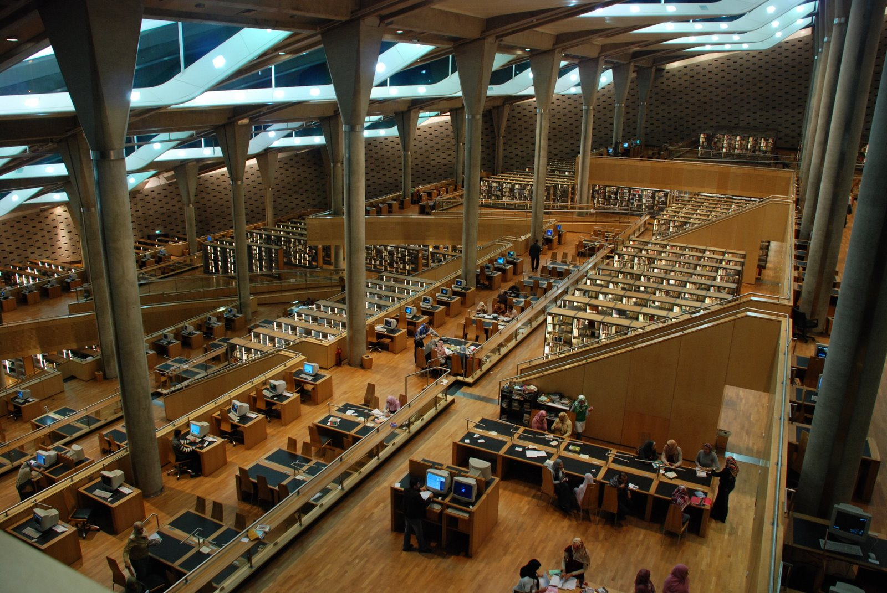

BIBLIOTEKA
Strona główna
Najładniejsze biblioteki
Recenzje ksiażek
NAJŁADNIEJSZE BIBLIOTEKI
Przed tobą zbiór kilku najpięknieszych bibliotek, rozsianych po całym świecie. Wszystkie sprawiają piorunujące wrażenie i zdaje się, że nauka w nich nie jest już nużącym obowiązkiem, a czystą przyjemnością. Enjoy!
1. Biblioteka w Trinity College w Dublinie (Irlandia)
Trzeba przyznać, że robi wrażenie. Mnie osobiście, przypomina bibliotekę w Hogwarcie :] Jednak w rzeczywistości jest to blioteka akademicka w Irlandii, główna biblioteka Trinity College w Dublinie i największa biblioteka w kraju. Ma prawo egzemplarza obowiązkowego (nałożony na wydawców obowiązek dostarczania do określonych bibliotek nieodpłatnie druków, książek oraz dokumentów dźwiękowych i audiowizualnych). Zbiory biblioteki obejmują książki, mapy, manuskrypty, czasopisma, gazety, dokumenty muzyczne i fotografie.
2. Biblioteka Stuttgarcka (Niemcy)
W porówananiu do dublińskiej biblioteki, wygląda niezwykle nowocześnie i wygodnie. Aż zachęca do wypożyczania i czytania. Niestety nie udało mi się znaleźć więcej informacji na jej temat.
3. Biblioteka Aleksandryjska (Egipt)
Chyba każdy słyszał o prehistorycznej bibliotece Aleksandryjskiej, największej bibliotece świata starożytnego. Istniała w Aleksandrii, a została założona przez Ptolemeusza I Sotera. Biblioteka Aleksandryjska funkcjonowała przy Muzeum Aleksandryjskim w okresie od III wieku p.n.e. do IV wieku n.e.
Prezentowana tutaj biblioteka to oczywiście nie ta sama (sławna Biblioteka Aleksandryjska spłonęła w pożarze). Znajduje się ona w Egipcie i jest równie piękna, jak jej imienniczka. Może pochwalić się podobnie wielką kolekcją zbiorów.

4. Biblioteka George'a Peabody'ego na Uniwersytecie Johnsa Hopkinsa w Baltimore (USA)
Opisując najpiękniejsze biblioteki, nie można zapomnieć o tej w USA. Robi powalające wrażenie, zarówno wyglądem, jak i ilością zbiorów. Jest to konserwatorium i szkoła przygotowawcza w dzielnicy Mount Vernon miasta Baltimore w stanie Maryland. Placówkę założył w 1857 filantrop George Peabody i była to pierwsza akademia muzyczna w Stanach Zjednoczonych.